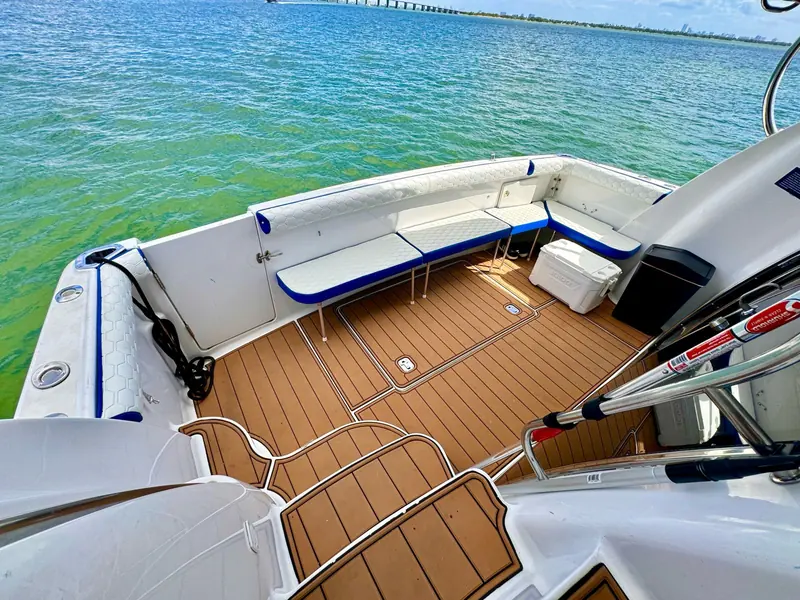

What to Bring on a Yacht Charter in Miami
Four hours on Biscayne Bay needs less than you think. Here is what earns its place in the bag, and what stays at the dock.

The short list
- Swimsuit, worn under your clothes. You will want to be in the water within minutes of the anchor going down.
- A towel and a dry change of clothes for the ride home.
- Lotion sunscreen. The sun on the water is stronger than it feels with the breeze. Reapply after every swim.
- Polarized sunglasses and a hat that fits tight. Loose hats go overboard on the first run across the bay.
- A light layer for sunset charters. It cools off quickly once the boat is moving after dark, especially from November to March.
- Photo ID.
- Phone, charger and a waterproof pouch. The best photos happen right at the rail.
- Motion sickness tablets if you have ever needed them. Take one before you board, not after you feel it.
What to wear
Dress for a day at the beach that might end at a nice dinner. Light fabrics, swimwear underneath, and something you do not mind getting splashed. White looks great in photos against the water, which is why half of every birthday and bachelorette group shows up in it.
Shoes matter more than anything else you wear. Boat decks are teak or non-skid fiberglass, and hard soles and heels mark both. Wear soft-soled sandals or boat shoes to the dock and expect to go barefoot on board.
Sunscreen: lotion, not spray
Spray sunscreen drifts. It lands on the deck, makes it slippery and stains upholstery. Bring a lotion, put the first layer on before you board, and keep the bottle in the shade.
Food and drinks
Sort this on the booking call. Tell us what you are planning for the group, whether it is a birthday cake, a full spread or just drinks, and we will tell you exactly how it works on your boat. Deciding it when you book means nobody is carrying bags down the dock at the last minute.
What to leave at the dock
- Hard suitcases and big coolers. Soft bags stow anywhere. Hard cases do not.
- High heels and hard-soled shoes.
- Spray sunscreen and tanning oil.
- Anything you would hate to lose. Jewelry and loose items have a way of finding the water.
For the group organizer
Send everyone the dock address the day before: 668 NW N River Dr on the Miami River, about 10 minutes from Brickell and 15 from Miami Beach. Ask the group to arrive early so you leave the dock on time.
Planning the day itself? See how a private yacht party runs, pick a stop from the Miami sandbar guide, or check the best time to go.
Frequently asked questions
What should I wear on a yacht in Miami?
Light clothes with a swimsuit underneath, polarized sunglasses and a hat that fits tight. Wear soft-soled shoes to the dock and expect to go barefoot on board.
Can I wear shoes on a yacht?
Soft-soled sandals or boat shoes are fine for boarding. Heels and hard soles mark teak and fiberglass decks, so most guests go barefoot once on board.
Why is spray sunscreen a problem on boats?
Spray drifts onto the deck, where it makes the surface slippery and stains upholstery. Use lotion sunscreen and apply the first layer before boarding.
Where do Miami Yacht Collective charters board?
At 668 NW N River Dr on the Miami River, about 10 minutes from Brickell and 15 minutes from Miami Beach.
Ready to pack?
Call or WhatsApp and we will hold a boat for your date. Captain and crew included, from $1,000 for 4 hours.